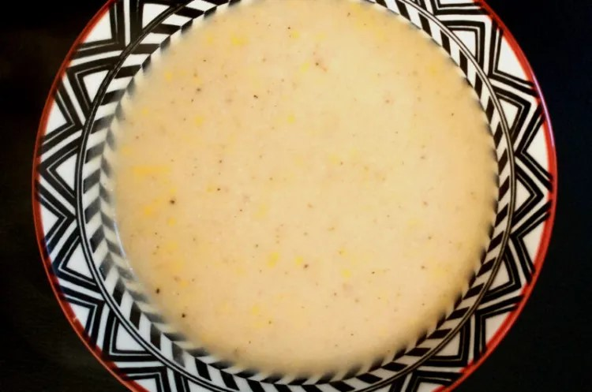

This white sauce is a quick recipe that will go great as a base for your lasagna.
Ingredients
- 2 tablespoons dairy free butter
- 1 tablespoon corn flour/gluten free all purpose flour
- 2 cups dairy free milk
- 1 cup water
- 1 bay leaf
- 1/4 tsp nutmeg powder
- salt and pepper, to taste
- 1/2 cup dairy free cheese shreds
Steps
- Heat 2 tablespoons dairy free butter on medium heat
- Once the butter has melted, add gluten free flour*, if using, cook until it starts bubbling
- Pour dairy free milk and add a bay leaf then let it come to a boil.
- Once the sauce becomes thick, add nutmeg and seasoning to your taste.
- Now add the dairy free cheese and stir to mix. Sauce is ready to be used.
Notes
- ‼ If using corn starch*, dissolve in some water and then add it after step 3.
White Sauce - Gluten and Dairy Free